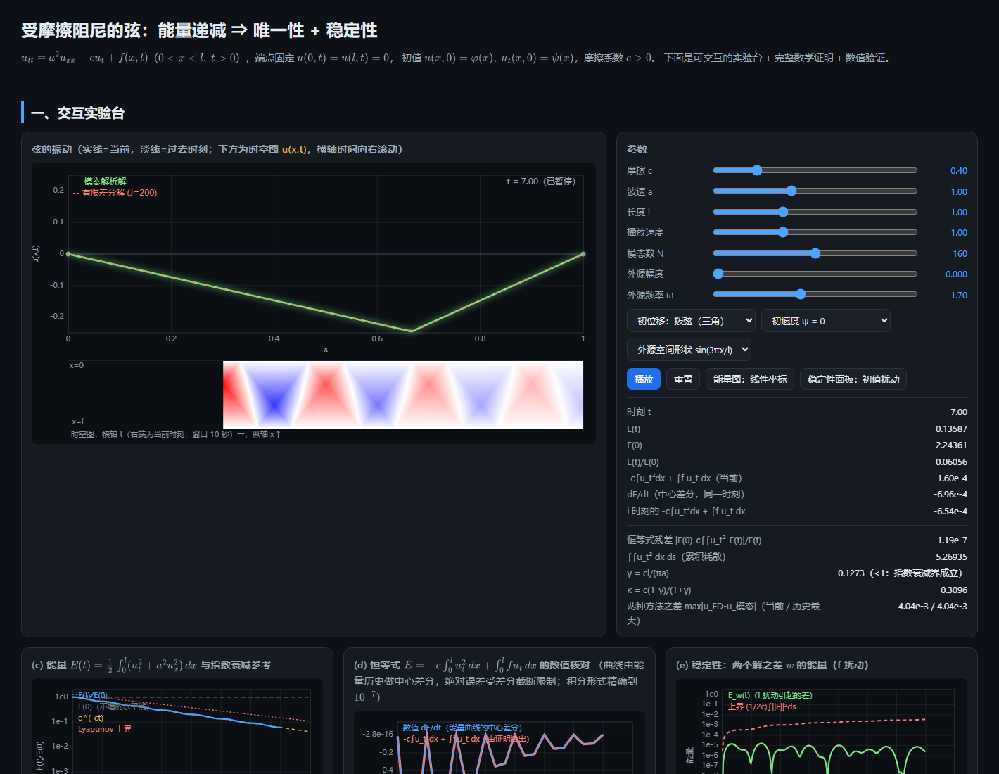

Interactive PDE atlas
让偏微分方程
动起来。
按方程类型整理交互实验、数学说明和数值验证。每个专题都是独立网页，可以单独下载并离线打开。
2 个已收录专题
4 个分类方向
单文件 · 离线可用
专题目录
双曲型 · 波动与振动
1 个专题传播、振荡与能量：观察扰动如何在时间和空间中演化。
抛物型 · 热与扩散
0 个专题热流、扩散与平滑过程。
专题待加入
椭圆型 · 势场与平衡
1 个专题边界条件如何决定稳态场的形状。
非线性与耦合
0 个专题多个机制相互作用时的涌现结构。
专题待加入
没有找到匹配的专题。试试“波动”“能量”或“稳定性”。
继续扩展这个专题库
新专题放入 topics/简短英文名称/，独立网页命名为 index.html。可编辑源码、图片与验证脚本留在各自的 source/ 内；随后在本目录和 README 中补上分类与链接。